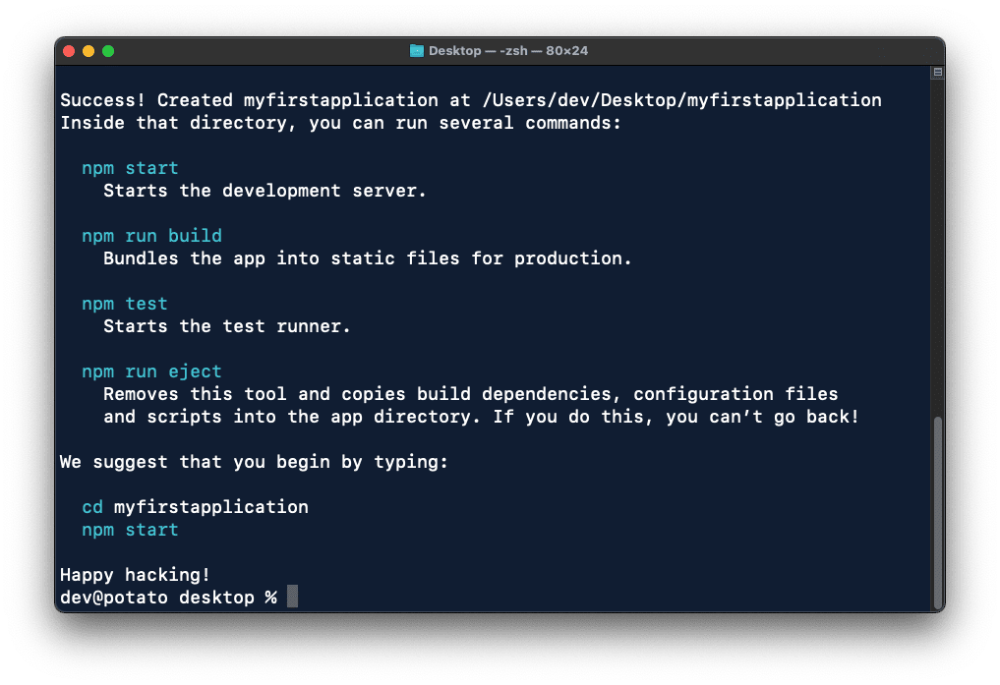

Why use React?
JavaScript is a powerful language that can be used both on the client-side and server-side (with Node.js); this makes it great for building anything from small projects to large-scale applications. Whenever you're working with simple applications, plain JavaScript will usually suffice, but add more complexity to your application, and your codebase will quickly begin to get messy. Luckily, frameworks fix this.
A framework is a collection of pre-written JavaScript code that you can use. This, in turn, prevents you from trying to reinvent the wheel, and skyrockets productivity and efficiency. There's several frameworks to choose from, but one of the most popular is React, which takes a "component-based" approach to JavaScript functions. Imagine the engineering behind a watch. A watch is one working piece, but it's composed of hundreds of other smaller pieces, each with their own functionality. React works similarly; anything in your application can be a component: buttons, forms, UIs, navigation menus, etc. This, in essence, allows you to easily reuse components all across your application.
Creating a React project
Now that you have a basic understanding on how React works, it's time to create your very first React project. Keep in mind, React is a JavaScript library, which means that it builds off JavaScript. In order to learn React, you must first have a strong proficiency with regular JavaScript and understand critical concepts like:
- Array manipulation using higher-order functions
- Scoping and hoisting
- Asynchronous code
- Logical operators and type coercion
- Making HTTP requests
...knowing these fundamentals will make learning React feel like a breeze and simple be sugar on top of what you already know.
React applications can be set up from scratch, but this requires prior knowledge of other libraries like Babel and webpack. The easiest way to create a React application is through Create React App, which automatically sets up a React environment by running one simple command. To get started, open your terminal emulator and type this into the command line:
$ npx create-react-app myfirstapplication
...this will create a new React project with the name of "myfirstapplication" inside your directory. It'll take a few seconds for everything to install, but once it's done, your terminal emulator should look like this...

...open the project in VS Code and start your server by typing npm start.
Your application should look like this...
...awesome, your React environment is now running and ready for development!
Building a component
Now that your React environment is set up, you can start developing your application. Because this article is a very surface-level introduction of React, I'll only be discussing components and props. Other concepts like hooks and state management are beyond the scope of this beginner-friendly article.
Remember, components are simply reusable bits of code that serve the same purpose as JavaScript functions.
In React, each component usually lives in it's own file. The App.js file
holds the App component. By default, the App
component comes with a few unnecessary lines of code. Clean it up so it looks like this:
const App = () => {
return (
);
}
export default App;
...React uses plenty of ES6 features, including arrow functions, which is why I transformed the
App function.
console.log('a');
console.log('b');
console.log('c');
/*
a
b
c
*/
...in JavaScript, normal functions are synchronous. console.log() is a function,
that when invoked, prints out a message. Here, you can see three letters printed out in the same order they were
invoked, as expected. Because JavaScript is synchronous, execution will always go something like this...
- JavaScript will reach the first function and invoke it, printing out
a. - JavaScript will move to the second function and invoke it, printing out
b. - JavaScript will move to the last function and invoke it, printing out
c.
...no matter how many times this code snippet is executed, it'll always run in the same order, from top-to-bottom. This, in essence, is the nature of synchronous code.
Event queue and event loop
Since JavaScript is single-threaded, it can only execute one thing at a time. If you click a button on a website that does something, the thread will handle that task; if, after clicking that button, you immediately click another button, JavaScript will make a "mental note" to execute that task next. This process is referred to as the event queue. If there's tasks in the event queue, JavaScript will execute each one individually in corresponding order until the event queue is empty. Think of the event queue as a "to-do" list for the thread.
The process of continuously checking this "to-do" list is called the event loop. If the event queue is empty, the thread "goes to sleep", but once an event is fired, the thread starts working again. This synchronous behavior comes with a few problems. What if you wanna' fetch data from an API? An action like this might take a while; with synchronous code, everything after that request will have to wait until the data is received before it can continue executing the rest of the code. As you might imagine, this can drastically slow down performance. Luckily, this is where asynchronous JavaScript shines.
Asynchronous JavaScript
Asynchronous code is code that can start something now and finish it later; it governs how you perform tasks that take a
while to do, such as fetching data from an API. In a nutshell, asynchronous code allows the program to be executed immediately,
whereas synchronous code will block further execution of the remaining code until it finishes the current task. One example of
asynchronous code in action is the setTimeout() function:
setTimeout(() => {
console.log('a')
}, 2000);
console.log('b');
console.log('c');
...the setTimeout() function takes a function that'll execute after a specified amount of time. In this
example, a will be printed out after 2 seconds. Someone with no understanding of asynchronous code
might assume the execution will look like this...
- JavaScript will wait 2 seconds, then print
a. bgets printed.cgets printed.
...but this assumption is incorrect. Since setTimeout() is an asynchronous function, JavaScript
will queue the inner function and move on to execute the rest of the code; once 2 seconds have passed, JavaScript will return to that
function and execute it, so in actuality, the execution ends up looking more like this...
- JavaScript sees that
ashould be executed after 2 seconds. - JavaScript adds that task to the queue and moves on to execute the rest of the code.
bgets printed.cgets printed.- 2 seconds have passed. Time to go back and execute that queued task now.
agets printed.
...with asynchronous code, the thread pretty much says "I'm not gonna' sit here and wait for this — I got other things to do! I'll come back to this when it's ready." This ability to navigate the code freely is part of what makes asynchronous JavaScript so powerful.
That's the difference between synchronous and asynchronous code. Synchronous code is executed line-by-line, top-to-bottom, whereas asynchronous code can freely move to the next line of code before the previous one has executed. Asynchronous code is always "shoved aside" so synchronous code can run first.
For a more in-depth and visual explanation on the event loop, I highly recommend this amazing presentation by Philip Roberts: